Cross-Tab Reports
This tutorial describes how to use the Cross Tab control to create a Sales Summary report.
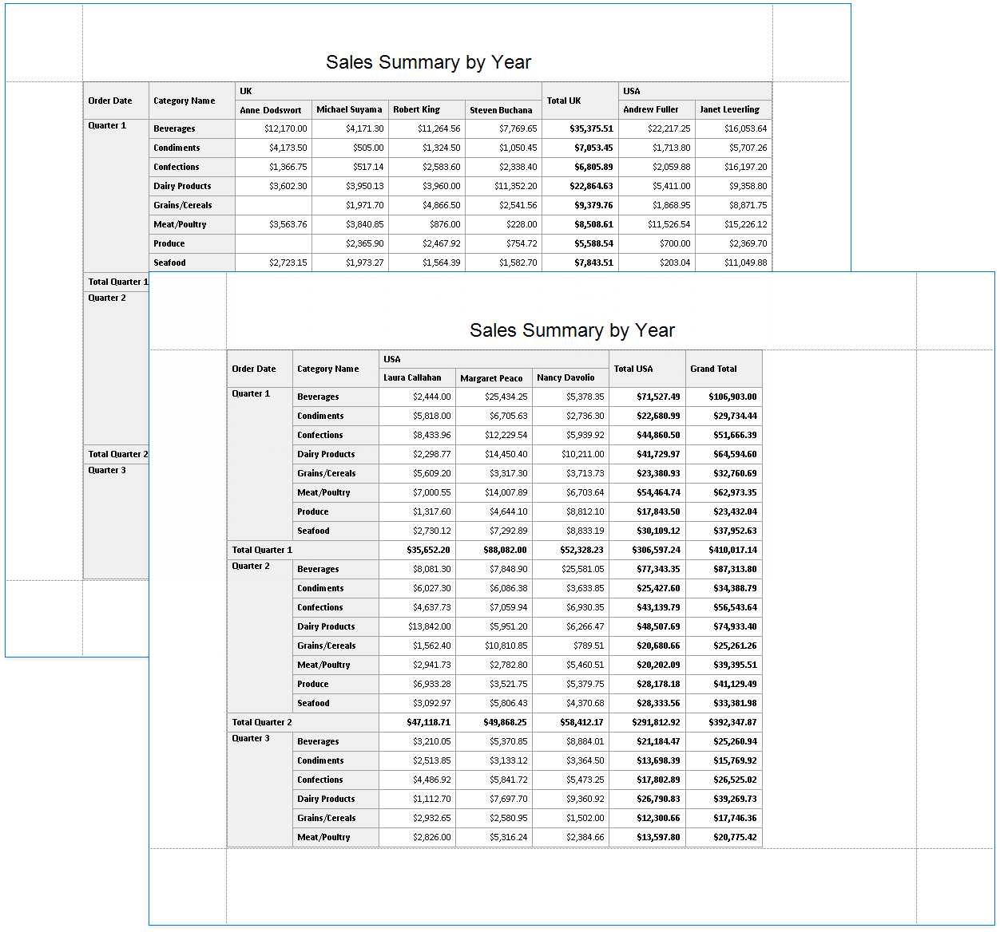
Tip
This tutorial demonstrates how to use the Cross-Tab Report Wizard. See Balance Sheets tutorial for information on how to configure a Cross Tab on the Design Surface.
Add a Cross-Tab Report
Invoke the Report Wizard.
Select Cross-Tab Report and click Next.
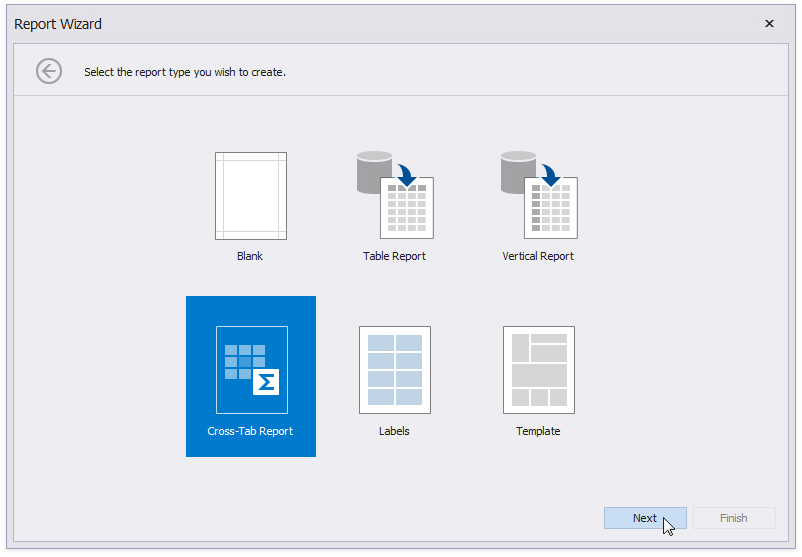
Bind the report to a data source as described in the Bind to Data section.
Select a data member that stores data for each sales person's sales. Click Next.
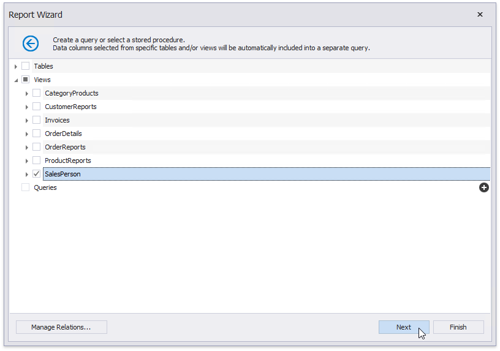
Drop data fields onto cross-tab areas to define row/column headers and data.
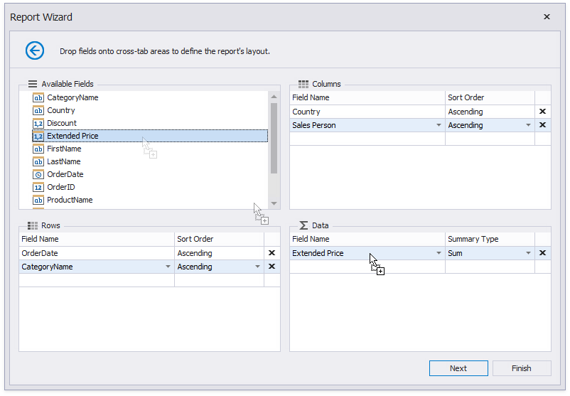
The field order defines the hierarchy in the resulting cross-tab report. The higher the field on the list, the higher the level in the field hierarchy.
Change the report page layout to landscape to ensure the cross-tab content fits the report well. Click Next.
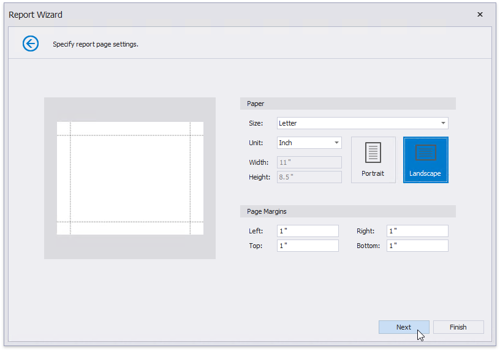
Set the report's color scheme and click Next.
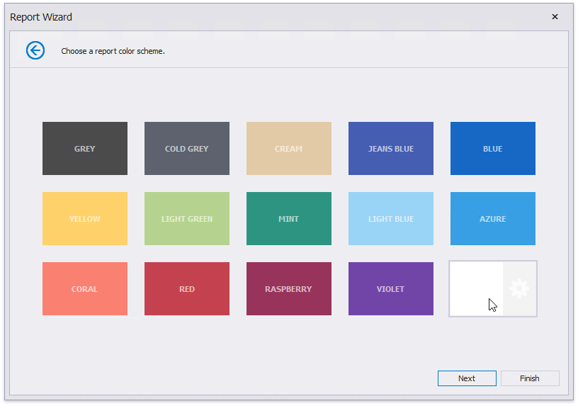
Specify the report's title and click Finish.
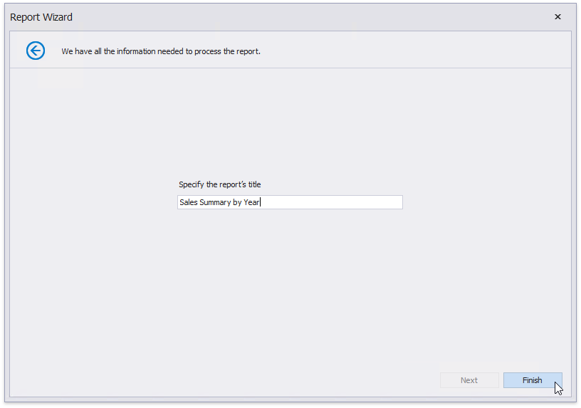
The generated report contains a Cross Tab that is configured based on the specified settings. The Cross Tab calculates automatic totals and grand totals across row and column fields.
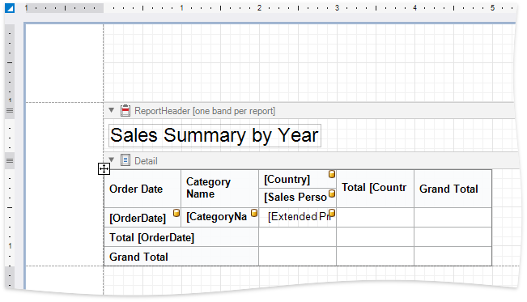
Tip
Ensure that the report's Data Source property is not set if you place the Cross Tab into the Detail band. Otherwise, the Cross Tab data is printed as many times as there are rows in the report data source.
Switch to the Preview tab to see an intermediate result.
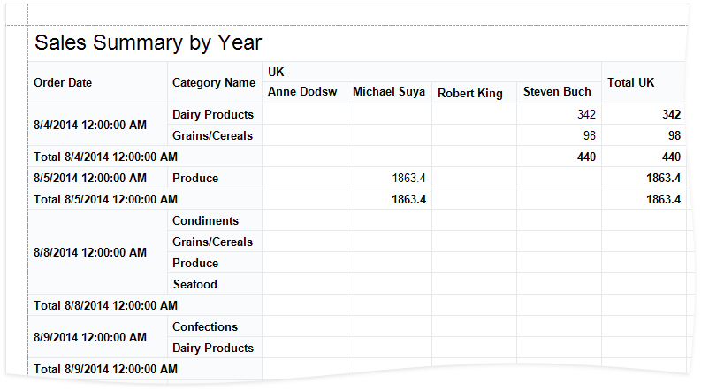
As you can see in the image above, the Cross Tab displays data for individual days. The next section shows how you can adjust the report so that it summarizes values by quarters.
Specify Group Settings
Select the row header cell and click its smart tag. Specify the Group Interval property to group data.
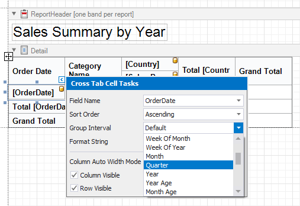
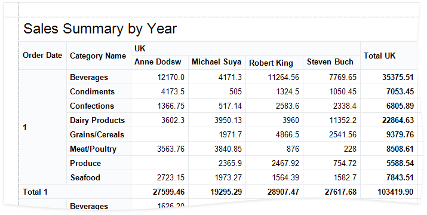
Format Data
Apply data formatting to cells. Hold down SHIFT or CTRL to select multiple cells, then go to the Properties window and specify the Text Format String property.
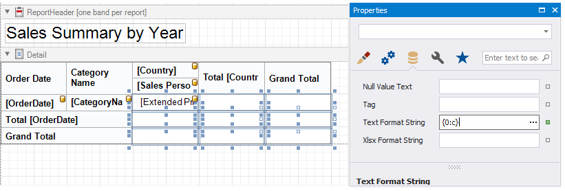
Customize Appearance
Select the Cross Tab, switch to the Properties window and expand the Styles property. Expand the General Style property and set Border Color to ControlDark. This value applies to all Cross Tab cells.
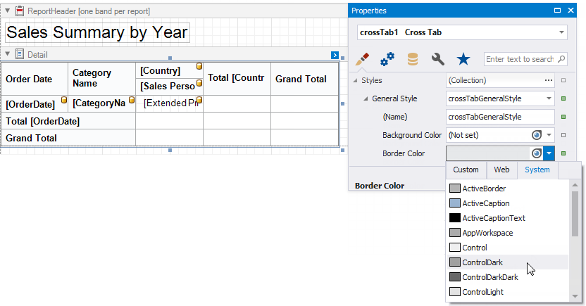
Expand the Header Area Style property and set the following properties:
- Background Color to Control
- Font to Calibri 9 Bold
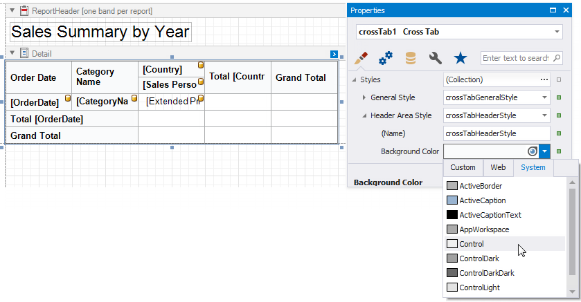
Expand the Total Area Style property and set Font to Calibri 9 Bold.
Expand the Data Area Style property and set Font to Calibri 9.
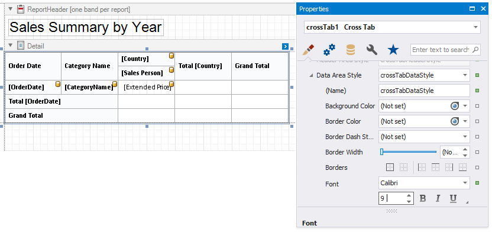
Hold down SHIFT or CTRL, and select the cells that display the grand total values. Go to the Properties window and set Background Color to ControlDark. This value applies to the selected cells only and overrides the value specified at the area level.
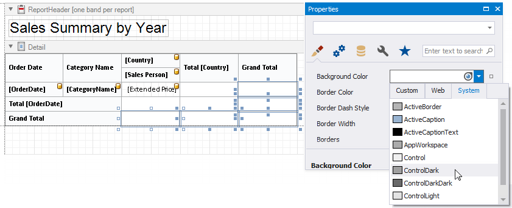
Select the row header cell and set Text Alignment to Top Left.
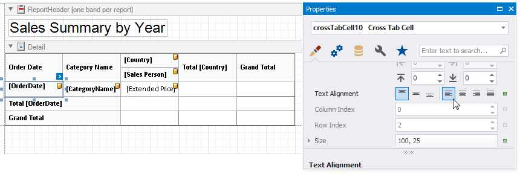
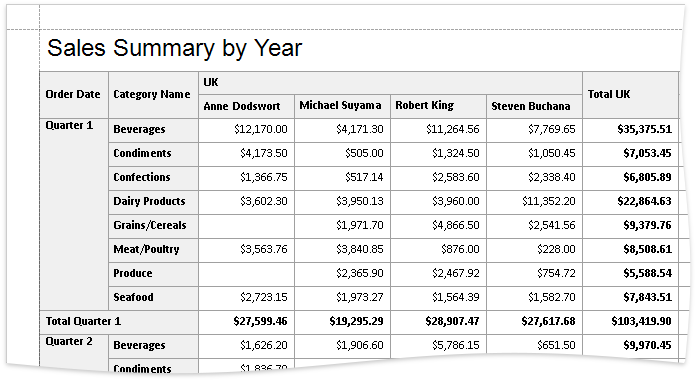
Adjust the Content Size
Use a cell's Column Auto Width Mode property to specify a cell width calculation method. The Report Wizard sets this property to Shrink And Grow for row headers and to None for other cells.

Resize the Cross Tab. You can also resize the individual rows and columns.
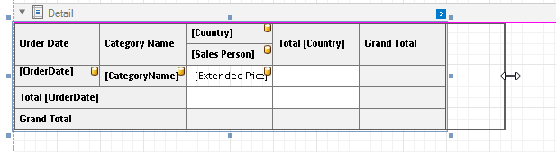
Move the report title to the Top Margin band to repeat the title on each page and make the Cross Tab occupy the entire page area.